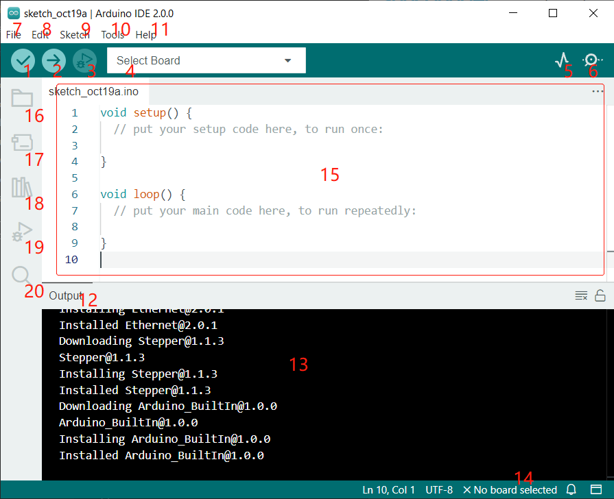

Bemerkung
Hallo und willkommen in der SunFounder Raspberry Pi & Arduino & ESP32 Enthusiasten-Gemeinschaft auf Facebook! Tauchen Sie tiefer ein in die Welt von Raspberry Pi, Arduino und ESP32 mit anderen Enthusiasten.
Warum beitreten?
Expertenunterstützung: Lösen Sie Nachverkaufsprobleme und technische Herausforderungen mit Hilfe unserer Gemeinschaft und unseres Teams.
Lernen & Teilen: Tauschen Sie Tipps und Anleitungen aus, um Ihre Fähigkeiten zu verbessern.
Exklusive Vorschauen: Erhalten Sie frühzeitigen Zugang zu neuen Produktankündigungen und exklusiven Einblicken.
Spezialrabatte: Genießen Sie exklusive Rabatte auf unsere neuesten Produkte.
Festliche Aktionen und Gewinnspiele: Nehmen Sie an Gewinnspielen und Feiertagsaktionen teil.
👉 Sind Sie bereit, mit uns zu erkunden und zu erschaffen? Klicken Sie auf [hier] und treten Sie heute bei!
Einführung in die Arduino IDE

Überprüfen (Verify): Kompiliert Ihren Code. Syntaxfehler werden durch Fehlermeldungen angezeigt.
Hochladen (Upload): Lädt den Code auf Ihr Board. Beim Klicken auf den Button blinken die RX- und TX-LEDs auf dem Board schnell und hören erst auf, wenn der Upload abgeschlossen ist.
Debuggen (Debug): Für zeilenweise Fehlerüberprüfung.
Board wählen (Select Board): Schnelle Einrichtung von Board und Port.
Serieller Plotter (Serial Plotter): Überwacht die Veränderungen der ausgelesenen Werte.
Serieller Monitor (Serial Monitor): Ein Klick auf den Button öffnet ein Fenster, das die vom Steuerboard gesendeten Daten empfängt. Sehr nützlich zur Fehlerbehebung.
Datei (File): Klicken Sie auf das Menü, und eine Dropdown-Liste erscheint mit Optionen zur Dateierstellung, -öffnung, -speicherung, -schließung und weiteren Konfigurationsmöglichkeiten.
Bearbeiten (Edit): Klicken Sie auf das Menü. In der Dropdown-Liste gibt es Bearbeitungsoptionen wie Ausschneiden, Kopieren, Einfügen, Suchen usw. mit ihren entsprechenden Tastenkombinationen.
Skizze (Sketch): Beinhaltet Funktionen wie Überprüfen, Hochladen, Dateien hinzufügen usw. Eine besonders wichtige Funktion ist Bibliothek einbinden (Include Library), wo Sie Bibliotheken hinzufügen können.
Werkzeuge (Tool): Enthält verschiedene Tools – am häufigsten verwendet sind Board (das verwendete Board) und Port (der Port, an dem Ihr Board angeschlossen ist). Bevor Sie den Code hochladen, müssen Sie diese auswählen oder überprüfen.
Hilfe (Help): Wenn Sie Anfänger sind, finden Sie hier im Menü die benötigte Unterstützung, einschließlich Bedienung der IDE, Einführungsinformationen, Fehlerbehebung, Codeerklärungen usw.
Ausgabebereich (Output Bar): Hier können Sie die Ausgaberegisterkarte wechseln.
Ausgabefenster (Output Window): Zeigt Informationen an.
Board und Port: Hier können Sie eine Vorschau des ausgewählten Boards und Ports für den Code-Upload sehen. Bei Unstimmigkeiten können Sie diese erneut über Werkzeuge (Tools) -> Board / Port auswählen.
Der Bearbeitungsbereich der IDE. Hier können Sie Ihren Code schreiben.
Skizzenbuch (Sketchbook): Zur Verwaltung von Skizzendateien.
Board-Verwaltung (Board Manager): Zur Verwaltung der Board-Treiber.
Bibliotheksverwalter (Library Manager): Zur Verwaltung Ihrer Bibliotheksdateien.
Debuggen: Unterstützt das Debugging des Codes.
Suchen (Search): Durchsucht die Codes Ihrer Skizzen.